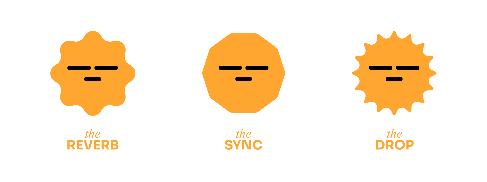

Come il fade che sfuma gradualmente il volume una traccia, porta armonia e calma, creando connessioni fluide tra persone e momenti. The Fade rappresenta una personalità collaborativa, con un ritmo calmo che favorisce la stabilità e il lavoro di gruppo.
Vivono per connettersi e condividere. Proprio come sul dancefloor, mixano le emozioni e creano condivisione. Portano il loro spirito esplosivo nella socialità quotidiana.
Potrebbe preferire modalità tranquille e rilassate, come il treno o una camminata, permettendogli di godere appieno del percorso mantenendo una connessione serena con l’ambiente.
Collabora in modo unico con The Beat, dove la sua delicatezza si intreccia con un ritmo forte e costante. Portano chi li segue in un viaggio che unisce dinamismo e morbidezza.
- Calmo e paziente, crea un senso di sicurezza in chi lo circonda.
- Collaborativo, sa come unire le persone verso un obiettivo comune.
- Regolare e affidabile, capace di mantenere un equilibrio costante.
- Può risultare troppo lento in situazioni che richiedono rapidità.
- A volte eccessivamente dipendente dalla stabilità, fatica a gestire il caos.
- Potrebbe rifiutare l’innovazione preferendo la tranquillità.
Ecco a te la StopList di The Fade, la playlist che unisce la tua musica a questo RitmoType, creando momenti per ritrovare te stesso.
Download my RitmoType
Scopri di più